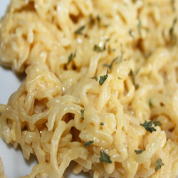

Cheesy Ramen Noodles
Melting cheese in ramen makes for an extremely simple and delicious spin
on typical ramen noodles that can be easily made in the college
environment.

Ingredients
- 2 cups of water
- 3oz of any flavoured ramen noodles
- 1 slice of american cheese
Steps
-
Bring water to a boil in a saucepan
- Add ramen noodles and cook until tender, about 2 minutes
- Pour out water, then stir in seasoning packet
and cheese until well blended.